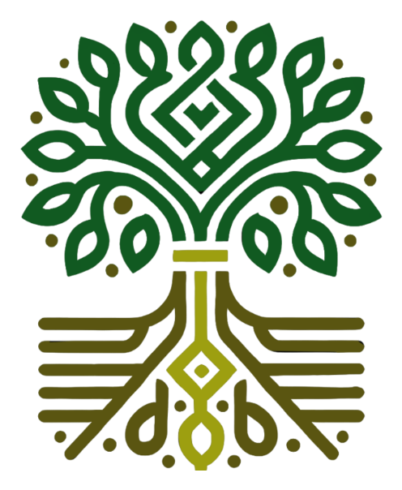

ARTIMIAUSIAS RENGINYS
„Bendrystės lėkštė“ atkeliauja į Kaubariškį
Liepos 17 d. 18.00 val.
Paplūdimio al. 6, Kaubariškis
ARTĖJA
Plačiau
Kartu kuriame gyvesnį Kaubariškį
Jungiame Kaubariškio gyventojus ir vietos sodininkų bendrijas, kad kartu kurtume gyvesnę, saugesnę ir aktyvesnę aplinką. Čia kiekvienas žmogus yra svarbus.
Šventės · renginiai · vaikų veiklos · bendruomenės iniciatyvos

ARTIMIAUSIAS RENGINYS
Liepos 17 d. 18.00 val.
Paplūdimio al. 6, Kaubariškis
Kas vyksta?
Artimiausi ir jau įvykę Kaubariškio bendruomenės renginiai.
Data: 2026 m. liepos 17 d.
Laikas: 18.00 val.
Vieta: Paplūdimio al. 6, Kaubariškis
Iš Sodelių bendruomenės į Kaubariškio bendruomenę atkeliauja „Bendrystės lėkštė“ su pyragu.
Kviečiame susitikti, pabendrauti, pasivaišinti ir jaukiai praleisti laiką kartu. Laukiami visi norintys prisijungti! ☕🍰
Data: 2026 m. liepos 25 d.
Laikas: 10.00–14.00 val.
Prekiautojai renkasi: 9.00–9.30 val.
Vieta: Paplūdimio al. 6, Kaubariškis, prie SB „Kaubariškis“ pastato aikštelėje.
Kviečiame parduoti, mainyti ar padovanoti nebereikalingus, tačiau dar tinkamus naudoti daiktus. Laukiami ir visi norintys apsilankyti, pabendrauti bei atrasti ką nors naudingo.
Dalyvavimas nemokamas.
BagažinTurgį organizuoja bendruomenės narė Karolina Kutienė – iniciatorė ir organizatorė.
Data: 2026 m. birželio 23 d.
Vieta: Kaubariškis
Kaubariškio bendruomenės organizuota šventė subūrė gyventojus ir svečius bendrystei, tradicijoms, veikloms bei jaukiam vasaros vakarui gamtoje.
Žiūrėti nuotraukas Skaityti straipsnįAktuali informacija
Aktualūs pranešimai, kvietimai ir bendruomenės naujienos.
Lietuvos kaimo bendruomenių sąjungos publikacija apie Kaubariškio bendruomenės surengtą šventę.
Skaityti straipsnįLiepos 17 d. 18.00 val. kviečiame susitikti Paplūdimio al. 6 ir jaukiai praleisti laiką kartu.
Renginio informacijaPardavimas, mainai, dovanojimas ir jaukus bendruomenės susitikimas Kaubariškyje. Dalyvavimas nemokamas.
Renginio informacijaSvarbios datos
Šiandien Lietuvoje
Laikas kraunamas…
Liepos 17 d. 18.00 val.
„Bendrystės lėkštė“ atkeliauja į Kaubariškį
Liepos 25 d. 10.00–14.00 val.
BagažinTurgis Kaubariškyje
Bendrystė ir veikla
Kaubariškio bendruomenė telkia gyventojus bendrai veiklai, bendravimui, renginiams ir vietos iniciatyvoms. Bendruomenės svetainėje skelbiama gyventojams aktuali informacija, renginiai, naujienos ir vieši dokumentai.
Kaubariškio bendruomenės vadovė – Rasa Aleknienė.

Kaubariškio bendruomenė
Prisidėkite prie bendruomenės
Skirdami iki 1,2 % savo sumokėto gyventojų pajamų mokesčio, papildomai nieko nemokate. Jūsų parama padeda organizuoti bendruomenės renginius, vaikų veiklas ir įgyvendinti vietos iniciatyvas.
Paramos gavėjas:
Kaubariškio bendruomenė
Juridinio asmens kodas:
307022988
Paramos skyrimo terminas:
Naują terminą paskelbs VMI
Mūsų akimirkos
Švenčių, renginių, talkų ir kitų bendrų veiklų akimirkos.
Vieša informacija
Viešai skelbiami bendruomenės dokumentai ir pranešimai.
Tikras dokumentas bus įkeltas vėliau.
Susisiekime
Vadovė – Rasa Aleknienė
El. paštas:
kaubariskiobendruomene@gmail.com
Telefonas:
+370 614 51083